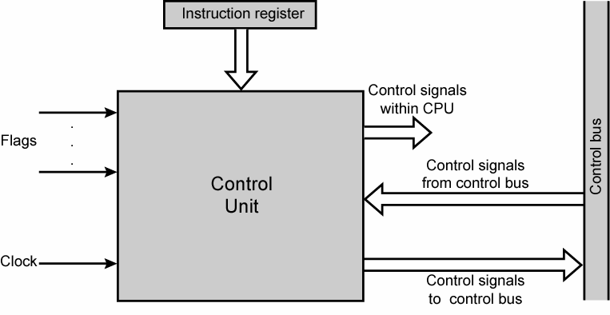
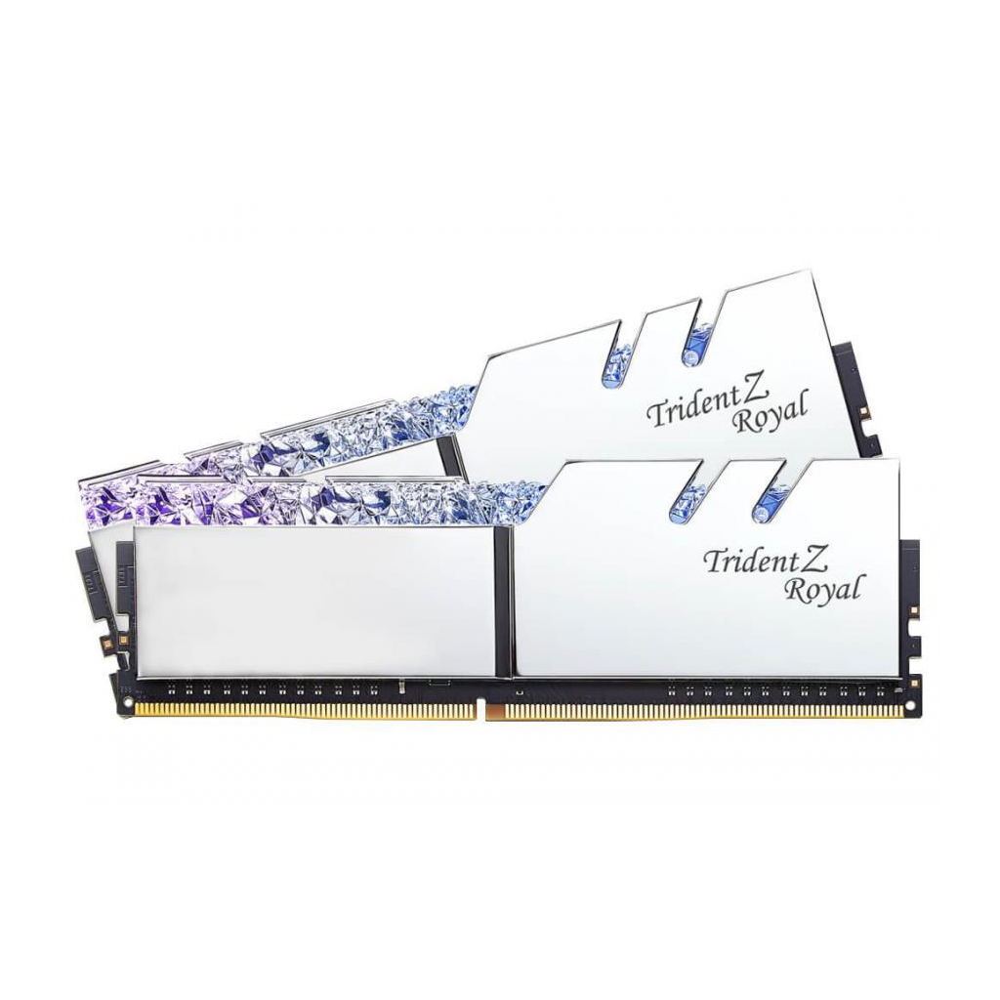
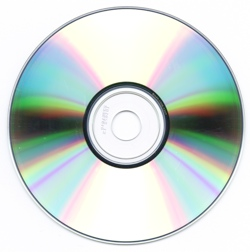

Computer Hardware
Table of Contents
Input Device
Output Device
Central Processing Unit (CPU)
Arithmetic Logic Unit (ALU)
Control Unit
Random Access Memory
Optical Memory
Magnetic Memory
Flash Memory
Logic Gates
1. Input Devices
 Input devices are capable of transforming real life actions into digital data. Devices like the keyboard are able to record the keys you press and create data on your computer. Some other popular input devices are microphones, console controllers, mice, and cameras.
Input devices are capable of transforming real life actions into digital data. Devices like the keyboard are able to record the keys you press and create data on your computer. Some other popular input devices are microphones, console controllers, mice, and cameras.
2. Output Device
 Output devices are capable of transforming digital data into real world actions. Speakers are able to read music files on your computer, and make the sound play in the real world. Some other popular output devices are printers, moniters or phone screens, earbuds, and projectors.
Output devices are capable of transforming digital data into real world actions. Speakers are able to read music files on your computer, and make the sound play in the real world. Some other popular output devices are printers, moniters or phone screens, earbuds, and projectors.
3. Central Processing Unit
 The central processing unit, or the CPU, is one of the most important components of a computer. The CPU allows your computer to follow instructions and execute programs. Depending on the quality of your processor, some big programs could take longer to execute.
The central processing unit, or the CPU, is one of the most important components of a computer. The CPU allows your computer to follow instructions and execute programs. Depending on the quality of your processor, some big programs could take longer to execute.
4. Arithmetic Logic Unit
 The arithmetic logic unit, or ALU, is an important component of your computer's CPU. The ALU's purpose is to solve math equations, such as multiplication, addition, subtraction, and various other logical problems.
The arithmetic logic unit, or ALU, is an important component of your computer's CPU. The ALU's purpose is to solve math equations, such as multiplication, addition, subtraction, and various other logical problems.
5. Control Unit
The control unit is a part of the CPU, which sends instructions to the ALU, RAM, input devices, and output devices. Without a control unit, your computer would not know how to respond to certain operations.
6. Random Access Memory
Random access memory, or RAM, is a temporary data storage component in your computer. RAM sticks can be clipped onto your motherboard, and can be used to store and access data at incredibly high speeds. Having more RAM in your computer will allow you to access files and stored content much easier.
7. Optical Memory
Optical memory is used to store data, and is accessed through a laser scan. Optical memory is incredibly outdated, and uses DVD's or DISCS to carry information. DVD's and DISCS are prone to water damage, scratches, or cracks, which makes optical memory a bad method for storing information.
8. Magnetic Memory
 Magnetic memory uses magnetism to record and store data on a hard drive. Magnetic memory can store incredibly large amounts of data measuring in terabytes, but is incredibly slow in comparison to its successor, flash memory.
Magnetic memory uses magnetism to record and store data on a hard drive. Magnetic memory can store incredibly large amounts of data measuring in terabytes, but is incredibly slow in comparison to its successor, flash memory.
9. Flash Memory
 Flash memory data devices are incredibly usefull, fast, and reliable. Flash memory is the most efficient form of memory to this day, and is used around the world by consumers. Camera memory, SSDs, and USB drives, are all forms of flash memory.
Flash memory data devices are incredibly usefull, fast, and reliable. Flash memory is the most efficient form of memory to this day, and is used around the world by consumers. Camera memory, SSDs, and USB drives, are all forms of flash memory.
10. Logic Gates
 Logic gates are electronic circuits which consist of at least one input and one output. There are 7 types of logic gates, AND gate, OR gate, XOR gate, NAND gate, NOR gate, XNOR gate, and NOT gate. Each logic gate is capable of performing basic logical functions in a computer by intaking numbers and outputting numbers.
Logic gates are electronic circuits which consist of at least one input and one output. There are 7 types of logic gates, AND gate, OR gate, XOR gate, NAND gate, NOR gate, XNOR gate, and NOT gate. Each logic gate is capable of performing basic logical functions in a computer by intaking numbers and outputting numbers.